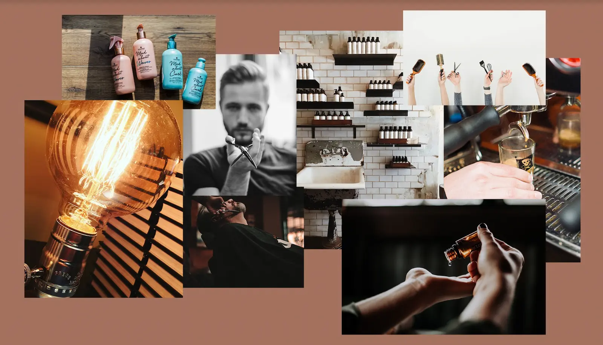

TEMA 5 - GRUNDLÆGGENDE INDHOLD
Dette tema har givet mig en grundlæggende indførsel i videoproduktion, herunder det
forarbejde som skal til inden selve optagelsen, samt postproduktion.
Dertil har vi redesignet en virksomheds hjemmeside.
Jeg er blevet introduceret til immaterielle rettigheder med udgangspunkt i
ophavsretsloven og markedsføringsloven, og kommer i den forbindelse ind på reglerne ved brug af
f.eks. billeder og musik i digital medieproduktion.
I dette tema lærte vi om hvordan man producerer video, colorgrade, lyd, optage m.m., og
vi fik forskellige metoder til hvordan man kan sammensætte digitalt indhold.
Vi har under dette tema fået to opgaver stillet, netop et pilotprojekt samt et redesign
af en virksomheds hjemmeside.
PILOT PROJEKT
Først fik vi til opgave at finde en person med en passion, og interviewe personen. Vi skulle så lave en video omkring personen, og kunne implementere videoen både lokalt via html, men også via youtube. Vi blev under dette projekt introduceret til metoder såsom 5-skuds reglen.
FÆRDIG VIDEO
REDESIGN
HAIR TO STAY
Næste opgave var at skabe et redesign af en virksomheds hjemmeside, ud fra et grundigt forarbejde. Vi blev som det første introduceret til metoderne trelloboard og scrum. Trelloboard metoden gjorde vi meget brug af for at holde fokus og styr på hvilke opgaver vi skulle udføre undervejs. Det gav samtidig en idé om hvem som arbejdede på hvad i gruppen. Scrum metoden gik ud på at holde et stående møde hver morgen, for at få en status over gårdagens arbejde, samt hvad programmet for dagen var. Begge metoder var virkelig gode at benytte til en stor opgave som denne.
FORARBEJDE
Først og fremmest analyserede vi virksomheden, fandt frem til hvem målgruppen er, hvad deres passion er,
hvordan de gerne vil fremstå, hvad deres kerneværdier er m.m.
Vi har i dette tema har genbrugt mange af vores forskellige metoder såsom moodboard, styletile,
wireframe, layoutdiagram, fotostil, storyboards, interview, brainstorm, sitemap.
Herunder ses lidt af hvert. Der er netop taget udgangspunkt i det redesign vi har fået til opgave.
MOODBOARD
STYLETILE
STORYBOARD
SITEMAP
FORSKELLIGE METODER
Vi har også brugt nye metoder til at researche og få nogle indsigter før vi gik i gang med at designe vores hjemmeside, men også undervejs. Det har f.eks. været BERT-test, 5 sec test, tænke-højt-test, trelloboard, scrum.
BERT-TEST
Vi foretog en BERT-test af den nuværende hjemmeside, for ligesom at se hvad målgruppen rent faktisk tænkte om Hair To Stays hjemmeside. Her fik vi et tydeligt tegn på at hjemmesiden udstråler at det er en budget frisør og at det virker uprofessionelt. Hair To Stay ønskede netop det modsatte af disse svar, og det fik vi en god dialog ud af for at finde frem til hvordan de godt kunne tænke sig udtrykket på den nye hjemmeside. Denne BERT test gav os anledning til at fokusere på at skabe en stilren, professionel og mere eksklusiv hjemmeside.
Vi tog derefter en BERT test af vores nye hjemmeside. Og hvis vi skal sammenligne de svar vi fik, var det helt tydeligt at se at vi havde formået at gøre hjemmesiden meget mere professionel at se på. Ift om det er budget stadig, så ligger den på midten nu, så derfor vurderer vi at vi synes dette er tilfredsstillende.
Til sidst skulle vi udarbejde et dokument omkring vores temadokumentation og pitche vores redesign.
LINK TIL PITCH
https://docs.google.com/presentation/d/1MCGWL3LFD4U_RgAjdF4MgnLcrdBLPlIpi-ln-nXMQdg/edit?usp=sharing
LINK TIL RESULTAT
REDESIGN AF WEBSITE - HAIR TO STAY
http://rebeccahildebrandt.dk/kea/05_indhold/redesign/05.02.01/index.html